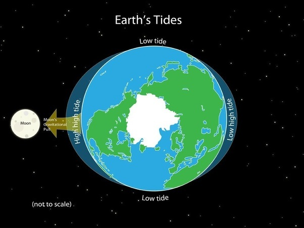

What is the moon?
The Moon is Earth's only natural satellite. It is the fifth largest satellite in the Solar System and the largest and most massive relative to its parent planet, with a diameter about one-quarter that of Earth. The Moon is a planetary-mass object with a differentiated rocky body, making it a satellite planet under the geophysical definitions of the term and larger than all known dwarf planets of the Solar System.
It lacks any significant atmosphere, hydrosphere, or magnetic field. Its surface gravity is about one-sixth of Earth's at 0.1654 g, with Jupiter's moon Io being the only satellite in the Solar System known to have a higher surface gravity and density.
The Moon orbits Earth at an average distance of 384,400 km (238,900 mi), or about 30 times Earth's diameter. The Moon's orbit around Earth has a sidereal period of 27.3 days. During each synodic period of 29.5 days, the amount of visible surface illuminated by the Sun varies from none up to 100%, resulting in lunar phases that form the basis for the months of a lunar calendar.
The Moon is tidally locked to Earth, which means that the length of a full rotation of the Moon on its own axis causes its same side (the near side) to always face Earth, and the somewhat longer lunar day is the same as the synodic period. However, 59% of the total lunar surface can be seen from Earth through cyclical shifts in perspective known as libration.
Where did the moon come from?
The most widely accepted origin explanation posits that the Moon formed 4.51 billion years ago, not long after Earth, out of the debris from a giant impact between the planet and a hypothesized Mars-sized body called Theia. It then receded to a wider orbit because of tidal interaction with the Earth. The near side of the Moon is marked by dark volcanic maria ("seas"), which fill the spaces between bright ancient crustal highlands and prominent impact craters.
Most of the large impact basins and mare surfaces were in place by the end of the Imbrian period, some three billion years ago. The lunar surface is fairly non-reflective, with the reflectance of lunar soil being comparable to that of asphalt. However, due to its large angular diameter, the full moon is the brightest celestial object in the night sky. The Moon's apparent size is nearly the same as that of the Sun, allowing it to cover the Sun almost completely during a total solar eclipse.
How does the moon affect us?

For centuries, the moon and how it affects human behavior has been at the center of mythology and folklore around the world. The very word “lunacy” dates back to the 15th century when it was believed the moon and its phases could make people become more or less aggressive, depending on its place in the lunar cycle.
According to senior curator Dr. Tom White, there are three main ways in which the Moon impacts on life: time, tides and light.
'For many animals, particularly birds, the Moon is essential to migration and navigation. Other will time their reproduction to coincide with the specific phases of the lunar cycle.'
It's possible you've heard of circadian rhythms. They refer to day and night cycles driven by Earth orbiting the Sun. Human circadian rhythms are easily thrown off by jet lag or a change of the clocks. But there are also circalunar rhythms, which are tied to lunar cycles.'Circalunar rhythms are very difficult to discern, but they have effects on different types of organisms,' says Tom. 'Some animals will respond to both a circadian rhythm and a lunar clock.'
Always on the move, sand hoppers (Talitrus saltator) work very hard to keep themselves in their ideal waterfront real estate. A small misjudgement would see them dried out on the beach, eaten by predators or swept out to sea. To keep them commuting in the right direction, sand hoppers carry two compasses to help them with orientation and navigation on the beach. Tom explains, 'They have a sun compass in their brain and a Moon compass in their antennae, so they know to stay buried during the day and can forage efficiently during the night at low tide.'
The mass spawning of corals on the Great Barrier Reef is also triggered by the Moon. It's brilliant to witness: during spawning, billions of coral polyps release their egg and sperm into the sea.
'The corals time their spawning according to several factors, including temperature, salinity and availability of food,' says Tom, 'but it always occurs between October and December and right after a full Moon.'
Barau's petrel (Pterodroma baraui) is an endangered seabird that breeds on the island of Réunion in the Indian Ocean. The petrels time their pre- and post-breeding migrations by length of the day, waiting until it reaches 12.5 hours before setting off.
Their arrival dates at the breeding grounds vary each year, but the birds always arrive together at the full Moon. This suggests they use both the Moon and the length of the day to synchronise their migrations.
Tides are perhaps the most observable effect of the Moon on Earth, and one that most people will recognise.
'We have some of the most extreme tidal ranges right here in the UK,' says Tom. 'The animals that live in costal habitats with high tidal ranges have adapted to some of the most variable and extreme places on Earth.'
Fluctuating light levels reflected by the Moon also have a startling impact on life on Earth. Not only has low lighting led to a number of interesting nocturnal adaptations, but some organisms rely directly on moonlight to navigate and procreate.
Although there's no scientific evidence to suggest the Moon affects our mood, it can inspire one fascinating Mediterranean plant to weep. Also known as the joint pine or Mormon tea, (Ephedra foeminea) is a gymnosperm, a group of ancient, flowerless plants that rely on insects for pollination. Without flowers or other lures, the joint pine has developed an unusual technique to get the attention of potential pollinators. In bright moonlight, each little cone produces droplets of fluid to help stick its pollen to passing insects. These droplets sparkle under polarising light (moonlight), creating a glittering disco-like display that draws beetles and other nocturnal insects to the plant.
Under the moonlight in Africa, the dung beetle Scarabaeus zambesianus uses the polarisation pattern of moonlight and the way it scatters through the atmosphere to navigate in a straight line. Tom says, 'If you're a dung beetle with a fresh dung pile, the best thing to do is to take your newly rolled dung ball and leave in a straight line, moving as quickly and efficiently as possible to your burrow, because if you hang around you might get eaten by a predator or lose your dung ball to a competitor.' He adds, 'In recent research done in a lab in Sweden, scientists placed dung beetles under non-polarising artificial light and discovered that they travelled in circles. It's quite a cautionary tale, says Tom.